◾︎ゲーム仕様変更
『アーセナル』登場!!!
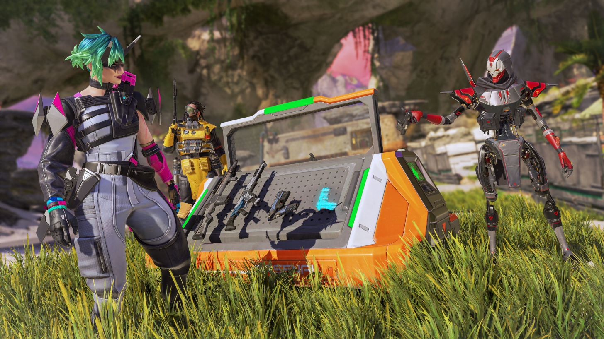
- ・マップの各地に設置されており、特定の弾薬の武器を自由に拾うことができる
- ・提供される弾薬の種類はマッチごとにランダム化
- ・各アーセナルの弾薬種に一致する武器を1つアップグレードする強化端末を装備
- ・強化するとアップグレードされたアタッチメントが付与され、武器にスコープがない場合はスコープを追加
回復

- ・シールドセルの回復時間を3秒から2.5秒に短縮
- ・注射器の回復時間を5秒から4秒に短縮
- ・セルと注射器が最大6個までスタック可能に
- ・開始時のセルと注射器は各2つから各4つに上昇
- ・バッテリーと医療キットの出現率がわずかに上昇
ヘルメット
- ・白、青、紫ヘルメットを削除
- ・プレイヤーは白ヘルメットで開始しない
金ヘルメット
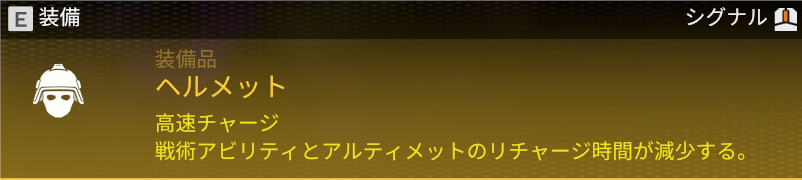
- ・金アーマーと同じ効果（セルと注射器の回復効果増加）
- ・レベルにかかわらずプレイヤーのアーマーを100に設定
- ・レジェンドアップグレードをアンロックするには引き続きレベルアップが必要だが、装備中はアーマーに影響しなくなる
- ・ヘッドショットダメージ軽減なし
- ・ボックスリセット後に一定確率でゴールドボックスに出現
「ミシックヘルメット」登場!!
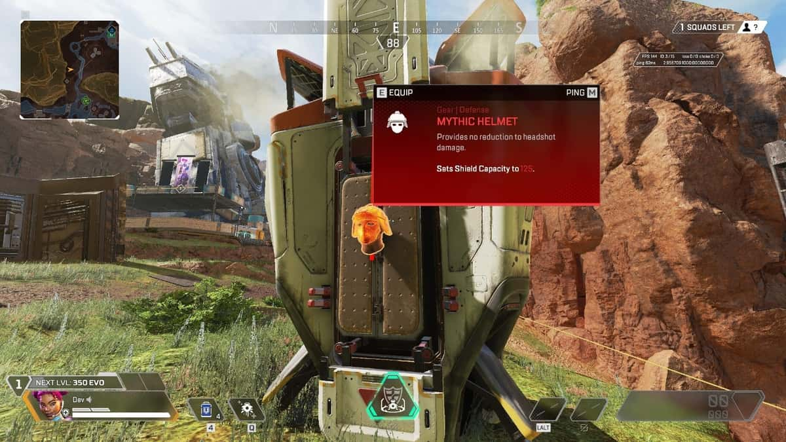
- ・レベルにかかわらずプレイヤーのアーマーを125に設定
- ・レジェンドアップグレードをアンロックするには引き続きレベルアップが必要だが、装備中はアーマーに影響しなくなる
- ・ヘッドショットダメージ軽減なし
- ・ミシックボックスとゲーム終盤のケアパッケージに出現
ノックダウン時の移動速度上昇
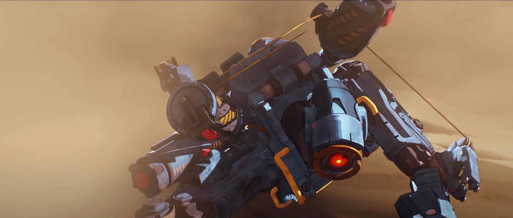
- ・ノックダウンシールドの有無にかかわらず、ノックダウン中の這う速度が大幅に上昇
降下時にランドマーク名を表示
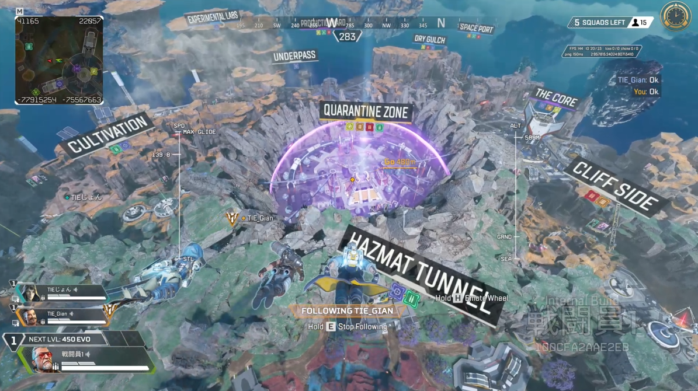
- ・初回降下時に各地点の名前と、アーセナルの情報が地点上に投影されて確認できるように
◾︎クラス調整
アサルト 強化!!!
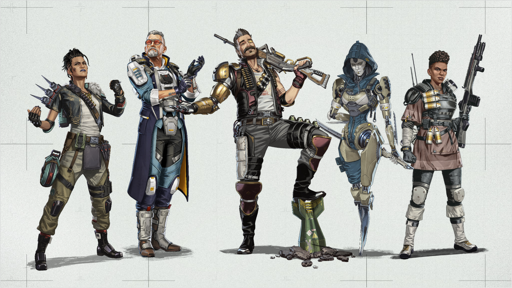
- ・収納時のリロード：収納された武器は2秒後に自動的にリロード
- ・戦闘予備：グレネード専用のインベントリスロットを2つ追加
- ・バトルサージ：アサルトレジェンドが敵のシールドを破壊すると、バトルサージが発生し、一時的なスピードブースト、リロードの高速化、シールドが破壊されたターゲットのハイライト表示がチーム全体に付与
▪️アサルトクラスのレジェンドに以下の新パークが付与
サポート 弱体化
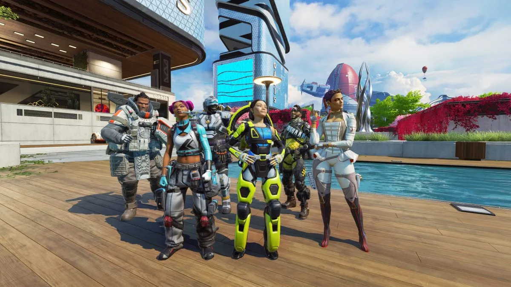
- ・回復中に最大歩行速度で移動できる性能が削除
- ・小回復の効果2倍を削除
▪️「回復の達人」を削除
◾︎レジェンド調整
アッシュ強化
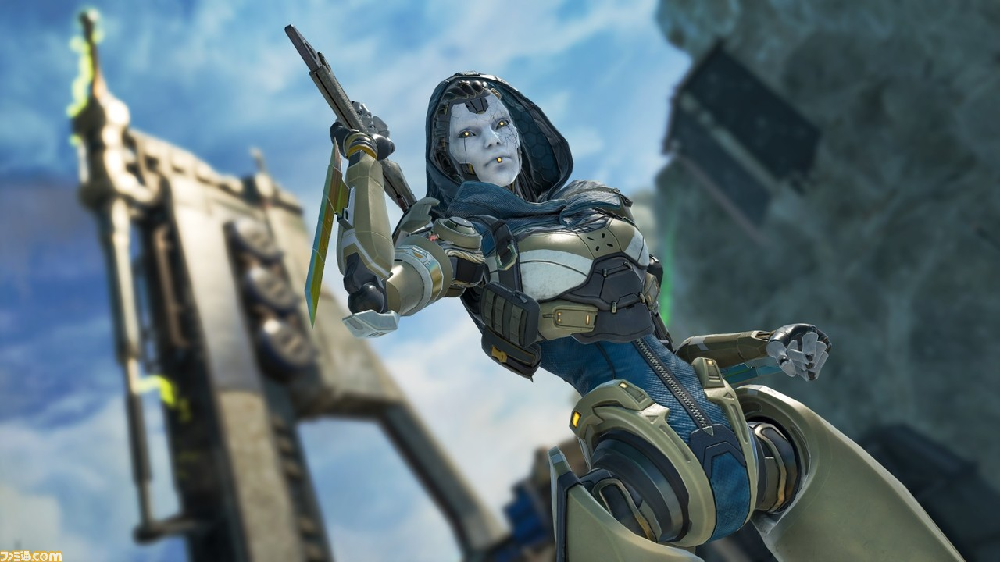
- ・デスボックススキャンで特定する効果 削除
- ・マップにデスボックスを表示する効果は継続
- ・空中でジャンプキーを押すと空中でダッシュする効果が追加
- ・命中したプレイヤーの位置ではなく、着弾時に発射物の位置にテザーを設置
- ・テザーを壊すのが少し難しくなり、一部のアビリティでも即座に壊れなくなった
- ・範囲を76mから100mに拡大
- ・移動時間を短縮
- ・設置の信頼性が向上
- ・設置プレビューの1フレーム遅延を削除
- ・設置モード時に最大範囲を表示するVFXを追加
▪️パッシブ：捕食者の追跡
▪️戦術アビリティ：アークスネア
▪️アルティメット：フェーズティア
- ○Lv2パーク
- ・殺人マシン: 削除
- ・1分の生命: 削除
- ・NEW デュアルティア：ウルト回数が1回増加
- ・NEW グリーディースネア：戦術アビリティが複数の敵を巻き込めるようになり、持続時間が24秒に増加
- ○Lv3パーク
- ・NEW 機械仕掛けの亡霊：パッシブのダッシュ回数が1回増加
▪️アップグレード
バリスティック強化
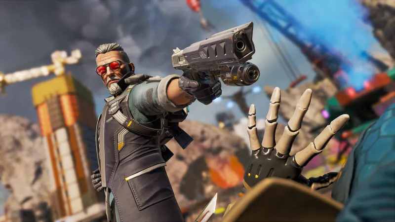
- ・スリング武器がアーマーLvによってレベルアップする(最大紫)
- ・スリングにケアパケ武器を装備できるように（ウルト中は弾薬無限）
- ・戦術チャージが2つになった
- ・オーバーヒート反応時間を1秒から1.2秒に増加
- ・スマートバレットの地上ダメージを10から20に増加
- ・
- ・部隊の移動速度が上昇
▪️パッシブ：スリング
▪️戦術アビリティ：ウィスラー
▪️アルティメット：テンペスト
- ○Lv2パーク
- ・スリングショット: 削除(ベースキットに統合)
- ・NEW キリングタイム：ウルトの効果時間を15秒延長
- ○Lv3パーク
- ・追加バレット: 戦術アビ回数が2倍になる（4回になる）
- ・静かな時間: オーバーヒートした敵を6秒間サイレンスさせるようになる
▪️アップグレード
クリプト 強化

- ・ジブラルタルのプロテクトドームを破壊可能になった
▪️アルティメット：EMP
ローバ 弱体化
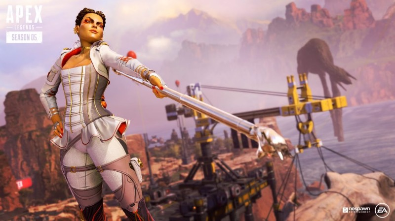
- ・50%チャージされた状態で開始するようになる
▪️アルティメット：ブラックマーケット
マッドマギー 強化
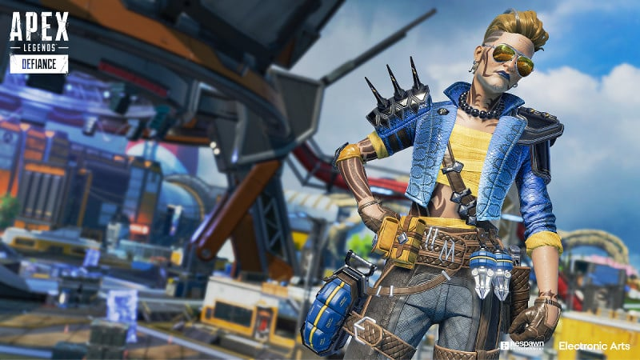
- ・ジブラルタルのプロテクトドームを破壊可能になった
- ・ニューキャッスルのモバイルシールドを破壊可能になった
▪️戦術アビリティ：レッカーボール
◾︎武器調整（一部）
R-99 通常武器化
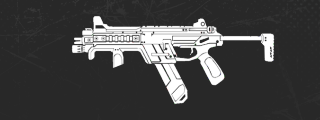
- ・ダメージが14から13に減少
- ・ヘッドショットダメージ: 16
- ・ダメージ減衰を削除
- ・エイム時の平行移動速度を他のSMGと同等に変更
- ・リコイルを増加
▪️詳細
ピースキーパー ケアパケ化
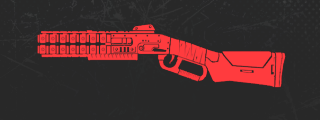
- ・1ペレットあたりのダメージを9から12に増加
- ・ヘッドショットダメージ: 135(全ペレット)
- ・チョーク速度が大幅に増加
- ・完全にチョークされたブラストパターンが大幅にタイトに
- ・ペレットは敵を貫通し、最初のターゲット以降の各ターゲットに50%のダメージを与える
▪️詳細
↓その他調整内容は以下のURLから↓
- ・URL→
制作中...
◾︎アタッチメント調整
ハンマーポイント
- ・削除
金マガジン
- ・装填中のリロード時間を5秒から2秒に短縮
1倍ホロスコープ
- ・削除